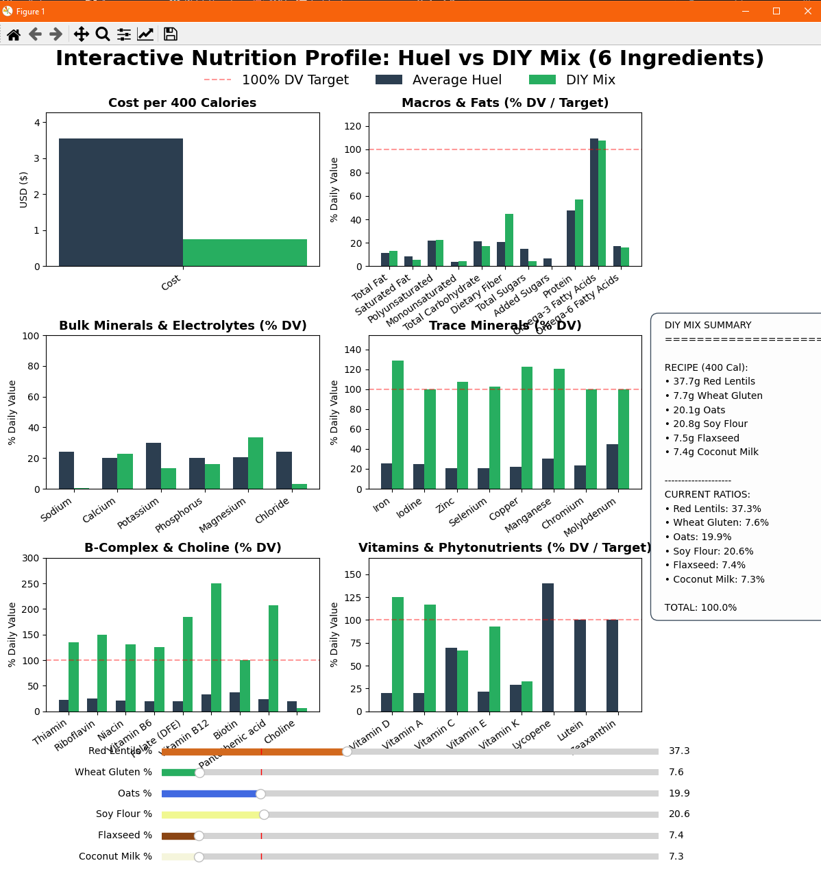
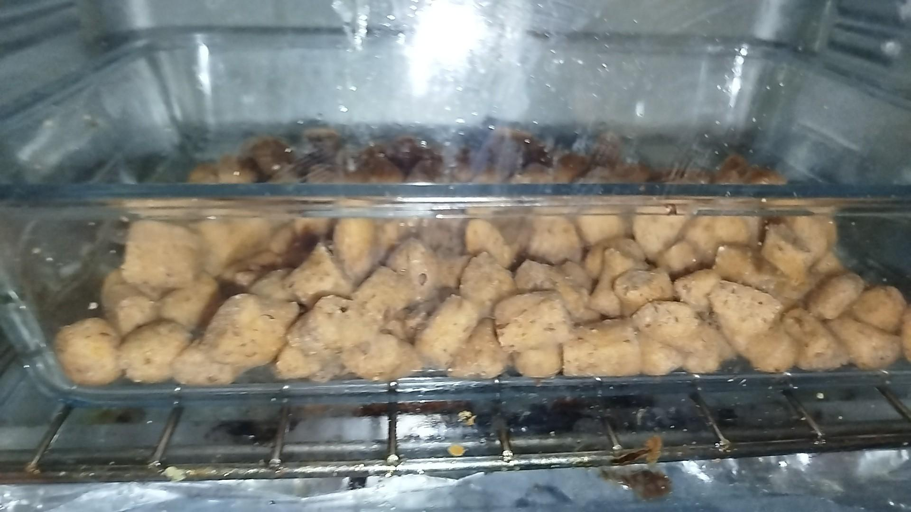
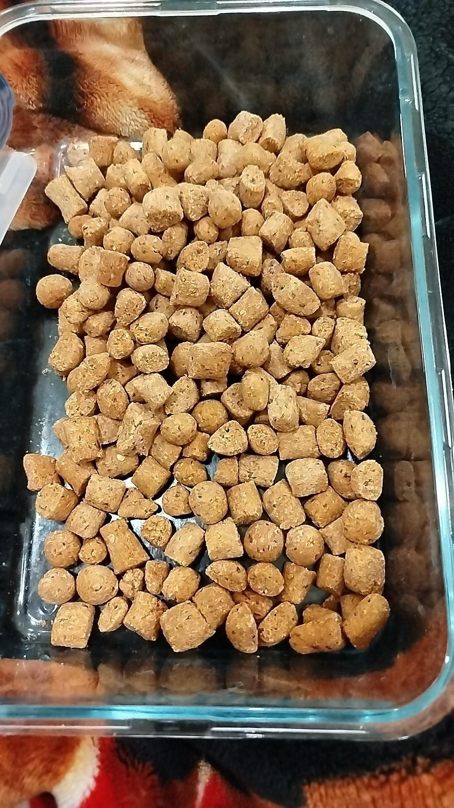

Human Kibble
2026
I made a program to minmax the nutritional efficiency of certain ingredients, in an attempt to make a nutritionally complete human kibble. It tasted... tolerable, but took too much effort to make (at that point, might as well just cook). Not posting the repo, because who in their right mind would want to approach cooking this way?
(Note: for cooking, check Other)


